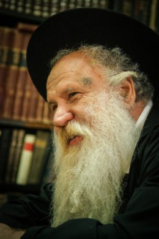

How Many Brachos Will We Say When Moshiach Is Revealed?
One of the Rebbe ’ s main instructions following Chaf-Ches Nissan was the necessity to learn about the Geula in the Rebbe ’ s sichos. * Rabbi Mordechai Shmuel Ashkenazi a ” h explained how learning or not-learning Inyanei Moshiach and Geula affects halachic decisions made by our poskim, why the Rebbe emphasized learning the halachos about Moshiach in the Rambam, and how all this is connected to spreading the Besuras Ha ’ Geula .

The late rav and mara d’asra of Kfar Chabad
In the Torah world, there is an expression “Hilchasa L’Meshicha.” This concept is said regarding halachic discussions whose ramifications will only apply after Moshiach’s coming. By using it, those conducting the discussion wish to convey that there is no point in continuing the discussion, since there is no practical relevance in the present.
On Shabbos Parshas Tazria-Metzora 5751, the Rebbe said to put an emphasis on learning Inyanei Geula by way of preparing for Moshiach’s coming. This sicha followed the earth-shattering sicha of Chaf-Ches Nissan in which the Rebbe announced that the role of bringing Moshiach is ours, and we need to do all that we can to bring about the revelation and coming of Moshiach.
The Chassidim, who did not understand just what they were supposed to do to bring Moshiach, received specific instructions in the weeks following that sicha, with the main instruction to learn about the Geula.
Actually, learning about the Geula is necessary not only to hasten its coming, but also from a practical-halachic perspective. Since, according to the Rebbe’s prophecy, we are standing at the eve of the Geula, and Moshiach can appear at any moment, we need to be ready for his coming from a halachic perspective; for example, what brachos will we need to say when we see him?
In order to arrive at the correct halachic conclusions in these matters, we need to learn about the Geula as dealt with at length in the Rebbe’s teachings; otherwise, one can arrive at the wrong halachic conclusions.
***
By Divine Providence, I saw a t’shuva from one of the great poskim of our time, someone who is relied upon for the most complicated halachic discussions. However, when it comes to how many brachos we will need to say when Moshiach comes, he puts forth certain lines of reasoning that show how far he is from being knowledgeable on the topic of Geula and Moshiach.
The discussion begins with a question that was sent to him regarding the brachos we will need to recite when we see Moshiach. This posek says we will say three brachos: one on seeing the king, “SheCholak MiChvodo L’Yireiav,” the second on seeing a chacham, “SheCholak MeiChochmaso,” and a third, “SheHechiyanu.”
The questioner said, maybe we need to put the first two brachos together as one, to say, “SheCholak MiChvodo U’MeiChochmaso L’Yireiav,” which refers to both Moshiach’s kingship and his wisdom. The posek says we cannot combine two brachos into one, and the proof is from the laws of brachos. If both a potato and an apple were placed before someone, he first needs to say the Ha’eitz bracha and then the Borei Pri HaAdama bracha. He can’t combine them into one bracha and say, “Borei Pri HaEitz V’HaAdama.”
The questioner persisted and brought a proof from the laws of trumos and maasros, that in certain instances, two brachos are combined – when a person separates trumos and maasros at the same time, he says, “L’Hafrish Trumos U’Maasros.”
The posek responded that trumos and maasros are unique in that with the same action, he made all the grain permissible, but the malchus and chochma of Moshiach are two separate things. Therefore, they are more similar to the example of the potato and apple than to trumos and maasros.
That, more or less, was the spirit of the exchange in that t’shuva. Again, this is a world-class posek, and there is no intention, whatsoever, to demean him. It’s just to illustrate how even a Gadol BaTorah can err when he is not proficient in the topic under discussion.
What is his basic error? The posek sees Moshiach’s wisdom and malchus as two separate things. That means that Moshiach can theoretically just be a king and not wise, or wise and not a king, although he will actually have both qualities.
If this posek would study the Rebbe’s teachings on Geula, and learn the amazing sicha on the Haftarah of VaYigash, “V’Avdi Dovid Melech Aleichem V’Roeh Echad Yihiyeh L’Kulam,” he would understand that Moshiach’s chochma and malchus are inseparable from who he is. Previously, there was a division of labor between the king, who was responsible for national leadership, and the nasi, head of the Sanhedrin, who was responsible for spiritual behavior of the people. The big chiddush of Moshiach is that he will integrate both of these roles. This unification is the essence of who Moshiach is, that he will unify the material and the spiritual.
According to this, of course, when seeing Moshiach, we can combine both brachos and say, “SheCholak MiChvodo U’MeiChochmaso L’Yireiav,” because we are actually dealing with one entity that cannot be divided into two.
I bring this example because often, the halachic perspective points at the degree of familiarity with a given topic, and in our case, study of the topic of Geula. When something is missing in the study of Geula, there is also something missing in halacha, and it is impossible to properly plumb the depths of the issue.
We, as Chabad Chassidim, have the double and redoubled responsibility to learn about Geula. We, who heard from the Rebbe, in a clear prophecy, that “Hinei, Hinei Zeh Moshiach Ba;” we who heard from the Rebbe that we need to do all that we can to bring the Geula; we heard from the Rebbe that the most direct way to bring the Geula is to learn Inyanei Geula. We must learn more and more and want to attain proficiency in this subject, to the point that this is reflected in the area of practical halacha.
We are speaking of a vast and wide ranging field. In Chassidus in general, and in the Rebbe’s teachings in particular, there are all the answers to all the questions. There is hardly anything that the Rebbe did not address, and we, Chabad Chassidim, must be experts on the Rebbe’s teachings on Geula.
There is a lot of talk about the need to strengthen emuna, but we cannot forget what Chassidus teaches: Da Es Elokei Avicha – first know, and only then believe. True emuna is when we start from the point that knowledge ends. We need to learn and try and understand every detail in the Rebbe’s teachings on the topic of Geula, and only that which cannot be learned and understood, must we believe with complete faith.
***
At a farbrengen in the Chabad shul in Tel Aviv, the Chassid Rabbi Moshe Gurary once said: How can we prove to a misnaged that Hashem really exists? We prove it to him from the Rambam. At the beginning of his work, Rambam writes, “The foundation of foundations and the pillar of wisdom is to know that there is a Primary Being etc.” If there was any question about the existence of G-d, the Raavad would immediately argue, and since the Raavad did not argue with the Rambam about this, that’s a clear Halachic proof that G-d does exist.
In this vein, we can prove to misnagdim that Moshiach is a reality and he can be revealed at any moment. At the end of his work, Rambam writes, “If a king will arise from the house of Dovid etc. … this is certainly Moshiach,” and since the Raavad does not argue on this, that’s a proof that Moshiach will actually come!
I have had many occasions to sit at farbrengens and talk about publicizing the Besuras Ha’Geula and the Goel. People have asked me: How can you publicize that the Rebbe is Moshiach? You say this to people who are far from Jewish observance and it turns them off from Judaism and Chabad!
To these people also I prove it from the Rambam… I ask the questioner: The Rambam states in his Halachic work that one day, a king will arise from the house of Dovid, and he will restore the Malchus Beis Dovid, gather all Jews, and build the Beis HaMikdash on Har Ha’bayis. Now, go and tell someone on the street that Moshiach might come today and build the Beis HaMikdash on Har Ha’bayis. He will look at you like you’re hallucinating. He knows that today we have superpowers and there are a hundred million Moslems who will go to war if they even hear that we intend on destroying the mosques on the Har Ha’bayis, and you are saying that a man will show up, whose qualifications are that he is immersed in Torah and involved in Mitzvos?
Think for a moment, I say to these fellows. The one who wrote this is the Rambam, the famous philosopher and doctor whom the entire world esteems for his wisdom till today. And he, with both feet on the ground, wrote this. That means he meant it in utter seriousness, with the same degree of gravity with which he wrote all the halachos and mitzvos. He also wrote that the day will come when Moshiach will build the Beis HaMikdash on the Har Ha’bayis. The Rambam did not write this in his Guide for the Perplexed, so that it could be interpreted in some abstract manner. He wrote it in the Yad HaChazaka, a book that is entirely halachos!
They once said in connection to Misnagdim that someone who openly denies the hidden part of Torah will end up being discovered to have secretly denied the revealed part of Torah. Unfortunately, those who are embarrassed to publicize that the Rebbe is Moshiach are the ones who are embarrassed to publicize the Besuras Ha’Geula altogether, and are even embarrassed to study the halachos about Moshiach in the Rambam.
***
We don’t need to be embarrassed. When the Rebbe told us to publicize the Besuras Ha’Geula, he also gave us the powers to influence the listeners to accept what we say and believe in complete faith in the coming of Moshiach. If someone is unsuccessful, it’s not a problem in the audience; it’s a problem with the mashpia.
The Rebbe himself said that if they don’t accept it, it proves that the mashpia did not speak with words emanating from his heart, and he needs to make a spiritual accounting and start speaking from the heart. When he will speak this way, says the Rebbe, he is assured that what he says will enter the hearts of his listeners and take effect.
We need to go on the path the Rebbe set out for us. The Rebbe chose the laws of Moshiach in the Rambam and hardly quoted from other sources, even though there are many Rishonim who address this topic, because the Rebbe wants to teach us that the subject of Moshiach is real, realistic, just like all the other parts of the Rambam. And we shouldn’t be ashamed to publicize it, just like we are not ashamed to publicize any other p’sak Halacha.
Our job now is to strengthen our emuna and not be fazed by tests. With the power of complete faith that the Rebbe promised and the Rebbe will fulfill what he promised, we will immediately merit the hisgalus of the Rebbe Melech HaMoshiach.
(From a farbrengen at a “Yom SheKulo Moshiach”)
Beis Moshiach (staff). "How Many Brachos Will We Say When Moshiach Is Revealed?." Beis Moshiach, no. 1113 (April 9, 2018).